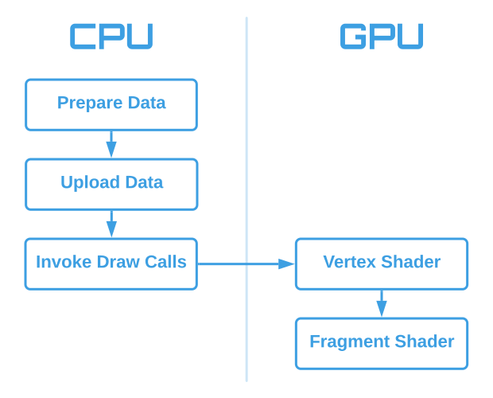
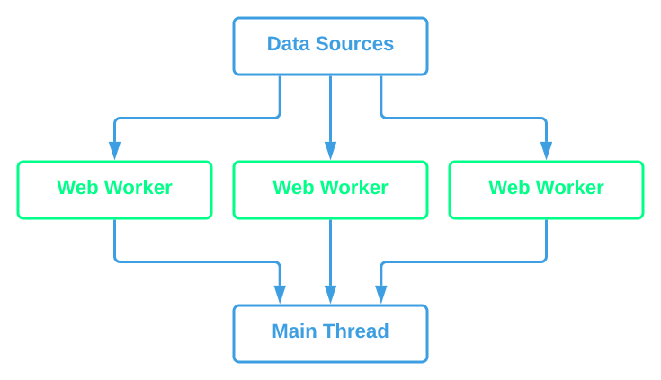
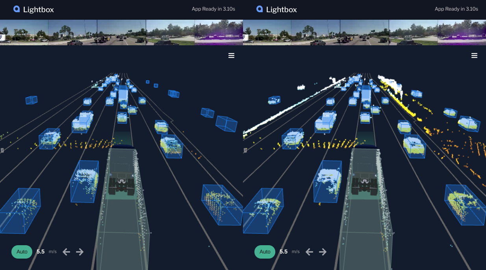

Basic Optimization of the WebGL Rendering Pipeline

16.67 milliseconds
What if you have too much data?
Parallelize the work with Web Workers.

What if you have too much data?
Perform the work progressively.
What if you have too much data?
Perform the work at opportune moments.

What if you're hitting Garabage Collection pauses?
-
Don't make unnecessary allocations, allocate
lazily
-
Reuse objects, e.g. unit basis vectors
-
Recycle objects, e.g. track objects
When do data uploads happen?
-
Most WebGL libraries obfuscate this, but it's
typically at render time.
-
Be aware that if your rendering function is
taking too long to execute, it may be a
bandwidth issue, not simply CPU/GPU usage.
How can we prevent frame drops due to limited
bandwidth?
-
Reduce data density, e.g. fewer lidar points
-
Upload progressively (see
bufferSubData)
-
Upload at opportune times, e.g. the Lightbox
approach
VS Cost = Vertices × Work per Vertex
-
Reduce the number of vertices
-
Simplify your meshes
- Frustum culling
- Level of Detail
-
Reduce the amount of work per vertex
-
Precompute common operations on CPU,
e.g., matrix multiplications
-
GPU-specific optimizations (avoid
vertex-specific branching,
multiply-then-add)
-
Generic low-level optimizations (lookup
tables, reusing calculations, etc)
FS Cost = Fragments × Work per Fragment
-
Reduce the number of fragments
-
Lower the resolution (upscale or smaller
canvas)
-
Disable MSAA (use nothing or FXAA)
-
Avoid overdraw (render front-to-back, be
wary of many transparent items)
-
Reduce the amount of work per fragment
-
Precompute on CPU and in vertex shader
(normalization of face normals)
-
GPU-specific optimizations (avoid
fragment-specific branching,
multiply-then-add)
-
Generic low-level optimizations (lookup
tables, reusing calculations, etc)